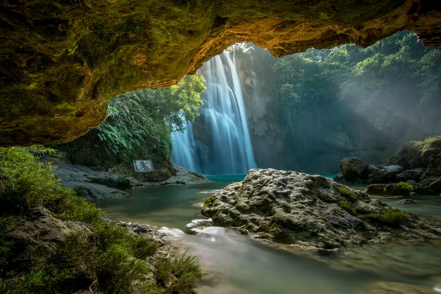
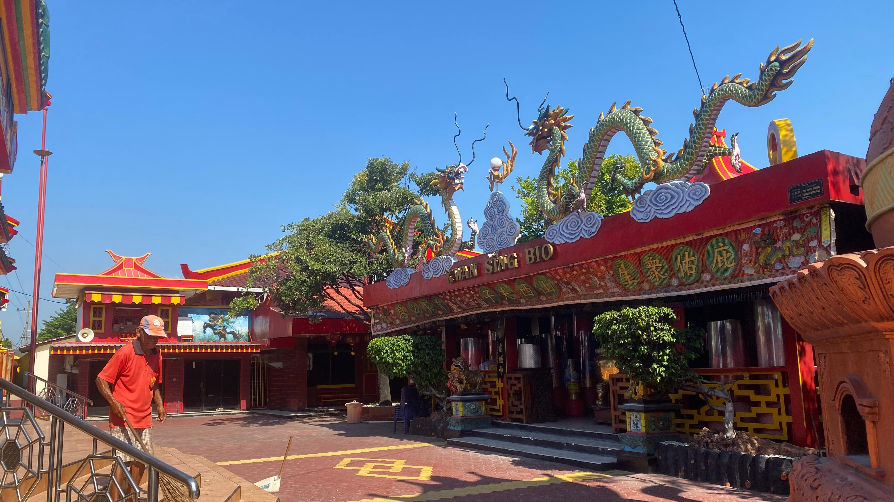
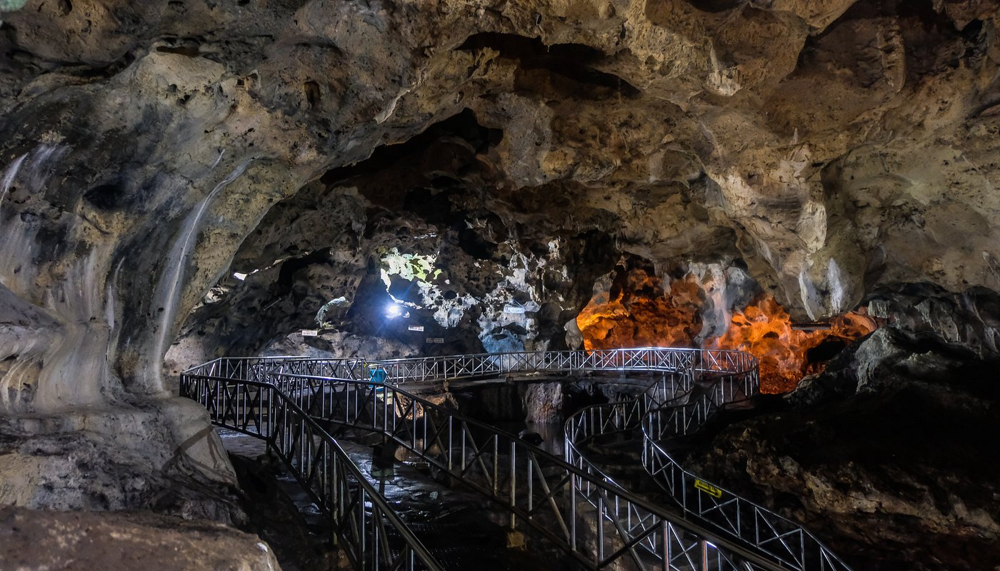
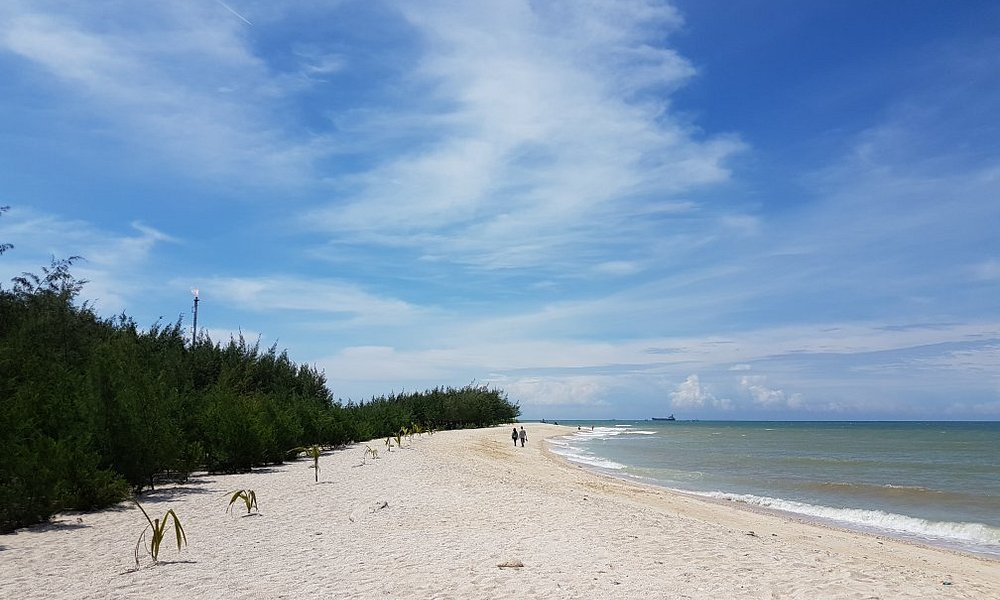

Putri Nglirip Waterfall is approximately 25 meters high and 20 meters wide. As soon as you arrive at this tourist spot, you’ll be greeted by the sound of the waterfall cascading into a natural turquoise-green pool.
With all its beauty, you can make this tourist spot your favorite place to unwind. Although it’s a bit far from downtown Tuban (33.3 km), the fatigue from the trip will be well worth it when you see the waterfall’s unparalleled beauty.

The Kwan Sing Bio Temple dates back to the 7th century. The temple is dominated by red, yellow, and a touch of green—both at the gate and on the building itself. This temple complex, which faces the Java Sea directly, is said to cover an area of 4–5 hectares. Given its size, it’s no wonder this temple is often referred to as the largest temple complex in Southeast Asia.
Here, you can also see a statue of the deity Kwan Sing Tee Koen at the back of the temple. Standing majestically at 30 meters tall, it’s no wonder this statue is listed in the Indonesian Museum of Records (MURI) as one of the tallest statues in Indonesia. Unfortunately, this colossal statue suddenly collapsed in 2020, presumably due to weather conditions.

Akbar Cave in Tuban offers the charm of a cave approximately 1,200 meters long. Upon entering the cave, visitors are immediately greeted by the sight of natural stalactites and stalagmites lining the cave walls.
Not only that, but visitors will also be treated to a small stream flowing through the cave, adorned with natural rock formations.
There are also reliefs along the walls that tell the history of Tuban, including the spread of religion and culture in the region.
While exploring, there’s no need to worry about slipping, as there are railings and walking paths to facilitate access.

There’s also Remen White Sand Beach, famous for its vast stretch of white sand and crystal-clear seawater—ideal for swimming or sunbathing. Its relatively quiet location makes this spot perfect for those who want to enjoy the beauty of nature in peace. The beach is also surrounded by coconut trees, adding to the refreshing atmosphere